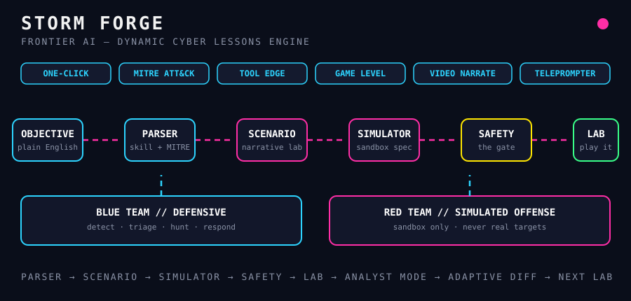

FRONTIER AI — DYNAMIC CYBER LESSONS ENGINE
One prompt in. One playable lab out.

objective ──► Parser ──► Scenario Gen ──► Simulator Builder ──► Safety Filter ──► Lab Lab ──► Learner attempts ──► Analyst Mode debrief ──► Adaptive Diff ──► next Lab
Full pipeline in one command.
Labs mapped to techniques.
One tool, one technique, timed.
XP, levels, streaks.
Narration scripts for walkthroughs.
On-screen cues while you run it.
Detect, triage, hunt, respond.
Sandbox only. Never real targets. The safety filter is the gate.
pip install -e . python -m storm_forge.cli one-click "detect LSASS credential dumping"